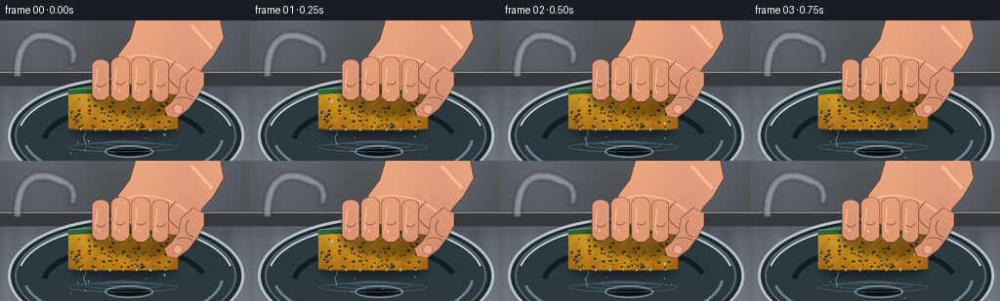
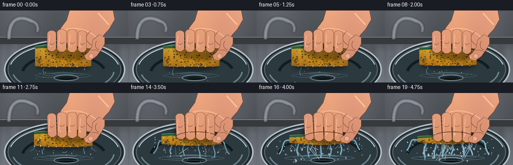
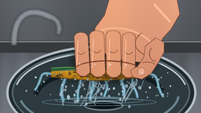

CODING AGENTS AS PIXEL WORLD MODELS
traex/GPT-5.6-Sol · phygen_011
点击播放 · 原生 RGB 像素
逐轮保存的候选
回放视频、检查图与代码变化。
每份候选均可单独播放。实际图片检查记录在下方工具轨迹中。
候选 01播放与检查图
点击播放 · 原生 RGB 像素


展开代码变化
--- 上一保存版本
+++ 本次保存版本
@@ -0,0 +1,373 @@
+"""Procedural text-to-video render for the sponge-squeeze prompt.
+
+The scene is drawn large and downsampled for smooth, photographic edges. All
+random texture is deterministically seeded, so running this file regenerates
+the exact submitted RGB frames.
+"""
+from pathlib import Path
+import math
+import numpy as np
+from PIL import Image, ImageDraw, ImageFilter
+
+import artifact_io
+
+
+W, H, N = 256, 144, 20
+S = 4
+WW, HH = W * S, H * S
+RNG = np.random.default_rng(1109)
+
+
+def sc(v):
+ if isinstance(v, (tuple, list)):
+ return tuple(int(round(x * S)) for x in v)
+ return int(round(v * S))
+
+
+def bezier(a, b, c, d, steps=30):
+ out = []
+ for q in np.linspace(0, 1, steps):
+ r = 1-q
+ out.append((S*(r**3*a[0]+3*r*r*q*b[0]+3*r*q*q*c[0]+q**3*d[0]),
+ S*(r**3*a[1]+3*r*r*q*b[1]+3*r*q*q*c[1]+q**3*d[1])))
+ return out
+
+
+def layer(base):
+ return Image.new("RGBA", base.size, (0, 0, 0, 0))
+
+
+def composite(base, over):
+ return Image.alpha_composite(base, over)
+
+
+def smoothstep(x):
+ x = min(1.0, max(0.0, x))
+ return x*x*(3-2*x)
+
+
+def background(frame):
+ """Brushed stainless sink and softly defocused kitchen background."""
+ yy, xx = np.mgrid[0:HH, 0:WW]
+ y = yy / S
+ x = xx / S
+ # Warm grey backsplash above, cool brushed steel below.
+ top = np.zeros((HH, WW, 3), dtype=np.float32)
+ top[..., 0] = 68 + 20*(1-y/H) + 7*np.sin(x/25)
+ top[..., 1] = 73 + 21*(1-y/H) + 7*np.sin(x/25)
+ top[..., 2] = 75 + 22*(1-y/H) + 8*np.sin(x/25)
+ steel = 79 + 34*(y/H) + 12*np.sin(x/19) + 4*np.sin(x/3.8)
+ blend = np.clip((y-54)/28, 0, 1)[..., None]
+ lower = np.stack((steel*.91, steel*.98, steel*1.02), axis=2)
+ arr = top*(1-blend) + lower*blend
+ # subtle deterministic sensor/grain texture
+ grain = RNG.normal(0, 1.45, (HH, WW, 1))
+ arr = np.clip(arr + grain, 0, 255).astype(np.uint8)
+ im = Image.fromarray(arr, "RGB").convert("RGBA")
+
+ d = ImageDraw.Draw(im, "RGBA")
+ # rear counter seam and sink rim
+ d.rectangle(sc((0, 52, 256, 67)), fill=(54, 58, 58, 255))
+ d.line(sc((0, 53, 256, 53)), fill=(166, 172, 171, 180), width=sc(1))
+ d.ellipse(sc((8, 58, 250, 178)), fill=(30, 42, 45, 255), outline=(178, 191, 192, 230), width=sc(3))
+ d.ellipse(sc((15, 64, 242, 172)), fill=(43, 57, 61, 255), outline=(86, 104, 108, 255), width=sc(2))
+ d.arc(sc((18, 66, 239, 171)), 192, 348, fill=(192, 209, 211, 105), width=sc(2))
+ # Basin reflections.
+ d.arc(sc((23, 73, 229, 165)), 5, 168, fill=(104, 132, 137, 110), width=sc(3))
+ d.arc(sc((42, 86, 213, 164)), 187, 344, fill=(18, 29, 33, 175), width=sc(6))
+ d.ellipse(sc((107, 128, 157, 141)), fill=(19, 28, 31, 255), outline=(110, 127, 129, 170), width=sc(2))
+ d.ellipse(sc((117, 131, 147, 138)), fill=(8, 14, 16, 255))
+ # Soft faucet silhouette on left (context only, not visually dominant).
+ f = layer(im)
+ fd = ImageDraw.Draw(f, "RGBA")
+ fd.line(bezier((18, 58), (17, 15), (39, 8), (65, 22)), fill=(161, 173, 174, 170), width=sc(8))
+ fd.line(bezier((64, 21), (78, 26), (76, 39), (74, 44)), fill=(158, 171, 172, 170), width=sc(7))
+ f = f.filter(ImageFilter.GaussianBlur(sc(1.2)))
+ return composite(im, f)
+
+
+# Stable material texture coordinates for the sponge.
+PORES = [(float(RNG.uniform(-.48, .48)), float(RNG.uniform(-.39, .43)),
+ float(RNG.uniform(.65, 1.8)), float(RNG.uniform(.45, 1.0))) for _ in range(105)]
+FIBERS = [(float(RNG.uniform(-.5, .5)), float(RNG.uniform(0, 1)),
+ float(RNG.uniform(1, 5))) for _ in range(55)]
+
+
+def sponge_geometry(p, tremor=0):
+ # Pressure ramps increasingly fast, compressing height while sides bulge.
+ cx = 126 + tremor
+ cy = 91 + 2.2*p
+ w = 112 + 10*p
+ h = 43 - 27.5*p
+ xs = np.linspace(-w/2, w/2, 90)
+ edge = (np.abs(xs)/(w/2))**5
+ top = cy-h/2 + 1.4*edge
+ # Four localized dents directly beneath the tightening fingers.
+ for fx in (-22, -3, 16, 34):
+ top += 1.15*p*np.exp(-((xs-fx)/7.2)**2)
+ bottom = cy+h/2 - 1.3*edge + 1.6*p*np.cos(xs/(w/2)*math.pi)
+ pts = [(cx+x, y) for x, y in zip(xs, top)]
+ pts += [(cx+x, y) for x, y in zip(xs[::-1], bottom[::-1])]
+ return cx, cy, w, h, xs, top, bottom, pts
+
+
+def draw_water(base, frame, p, geom):
+ """Water is already dripping at rest, becoming a turbulent gush."""
+ cx, cy, w, h, xs, top, bottom, _ = geom
+ lay = layer(base)
+ d = ImageDraw.Draw(lay, "RGBA")
+ intensity = 0.10 + 0.90*(p**1.65)
+
+ # Impact ripples in sink, widening with squeeze force.
+ for k in range(3):
+ rw = 20 + k*17 + 19*intensity
+ ry = 126 + k*2
+ d.ellipse(sc((cx-rw, ry-3-k, cx+rw, ry+3+k)), outline=(163, 225, 239, int(55+50*intensity)), width=sc(1))
+
+ # Continuous water ropes: wavy, translucent bodies with bright cores.
+ nstreams = 1 + int(5.5*intensity)
+ stream_positions = np.linspace(-.34, .35, nstreams)
+ for j, u in enumerate(stream_positions):
+ sx = cx + u*w + 2.0*math.sin(frame*.61+j*2.1)
+ sy = cy + h/2 - 1
+ ex = sx + (u*10+3*math.sin(frame*.47+j)) * intensity
+ ey = 126 + 4*math.sin(frame*.38+j)
+ pts = bezier((sx, sy), (sx+4*math.sin(j+frame*.25), sy+12),
+ (ex-5*math.cos(j), ey-13), (ex, ey), 22)
+ thick = sc(0.7 + 3.4*intensity*(.72+(.3*((j+1)%2))))
+ d.line(pts, fill=(94, 196, 224, int(90+85*intensity)), width=max(sc(1), thick))
+ d.line(pts, fill=(220, 249, 255, int(135+70*intensity)), width=max(sc(.45), thick//3))
+
+ # Arcing jets squeezed from both sponge ends late in the shot.
+ if p > .28:
+ q = smoothstep((p-.28)/.72)
+ for side in (-1, 1):
+ start = (cx + side*w*.45, cy+h*.12)
+ end = (cx + side*(64+18*q), 119+5*math.sin(frame+side))
+ pts = bezier(start, (start[0]+side*26*q, start[1]-5*q),
+ (end[0]-side*13, end[1]-18*q), end, 26)
+ d.line(pts, fill=(133, 221, 239, int(70+100*q)), width=sc(.8+2.2*q))
+ d.line(pts, fill=(239, 255, 255, int(90+90*q)), width=sc(.55))
+
+ # Coherent-looking spray particles. New deterministic cloud each frame,
+ # with count and streak length tied strongly to pressure.
+ rr = np.random.default_rng(5010 + frame)
+ count = int(5 + 58*intensity**1.7)
+ for _ in range(count):
+ side = rr.choice([-1, 1])
+ ox = cx + rr.uniform(-w*.47, w*.47)
+ oy = cy + h/2 + rr.uniform(-1, 7)
+ vx = rr.normal(0, 16*intensity) + side*rr.uniform(0, 15)*intensity
+ vy = rr.uniform(8, 38)
+ life = rr.uniform(.15, 1)
+ x2, y2 = ox + vx*life, oy + vy*life
+ r = rr.uniform(.35, 1.15) * (0.5+intensity)
+ if intensity > .55 and rr.random() < .34:
+ d.line(sc((ox, oy, x2, y2)), fill=(202, 244, 252, 150), width=max(sc(.5), sc(r)))
+ else:
+ d.ellipse(sc((x2-r, y2-r*1.35, x2+r, y2+r*1.35)),
+ fill=(201, 242, 249, int(rr.uniform(100, 205))),
+ outline=(244, 255, 255, 160))
+ return composite(base, lay)
+
+
+def draw_sponge(base, p, geom):
+ cx, cy, w, h, xs, top, bottom, pts = geom
+ # Shadow cast on sink / water.
+ sh = layer(base)
+ sd = ImageDraw.Draw(sh, "RGBA")
+ sd.ellipse(sc((cx-w*.49, cy+h*.23, cx+w*.49, cy+h*.70)), fill=(0, 0, 0, 105))
+ sh = sh.filter(ImageFilter.GaussianBlur(sc(4)))
+ base = composite(base, sh)
+
+ mask = Image.new("L", base.size, 0)
+ md = ImageDraw.Draw(mask)
+ md.polygon([sc(q) for q in pts], fill=255)
+ mask = mask.filter(ImageFilter.GaussianBlur(sc(.28)))
+
+ yy, xx = np.mgrid[0:HH, 0:WW]
+ # Rich soaked-yellow body, darker at bottom and edges.
+ yn = (yy/S - (cy-h/2))/max(h, 1)
+ side = np.abs(xx/S-cx)/(w/2)
+ tex = 7*np.sin(xx/13.0) + 4*np.sin((xx+yy)/7.0)
+ body = np.zeros((HH, WW, 4), np.uint8)
+ body[..., 0] = np.clip(231 - 48*yn - 25*side + tex, 0, 255)
+ body[..., 1] = np.clip(180 - 57*yn - 22*side + tex*.65, 0, 255)
+ body[..., 2] = np.clip(35 - 14*yn + tex*.15, 0, 255)
+ body[..., 3] = np.asarray(mask)
+ sp = Image.fromarray(body, "RGBA")
+ sd = ImageDraw.Draw(sp, "RGBA")
+ sd.line([sc(q) for q in pts], fill=(112, 77, 17, 210), width=sc(1.0), joint="curve")
+
+ # Pores deform along with the sponge; they flatten under pressure.
+ for ux, uy, rad, shade in PORES:
+ x = cx + ux*w
+ y = cy + uy*h
+ rx = rad*(1+.25*p)
+ ry = rad*(.75-.42*p)
+ col = (106, 73, 15, int(45+95*shade))
+ sd.ellipse(sc((x-rx, y-ry, x+rx, y+ry)), fill=col)
+ if rad > 1.35:
+ sd.arc(sc((x-rx, y-ry, x+rx, y+ry)), 195, 330, fill=(255, 225, 94, 110), width=sc(.35))
+
+ # Green scrub layer follows the irregular top contour.
+ top_pts = [(cx+x, y-.2) for x, y in zip(xs, top)]
+ lower_pts = [(cx+x, y+max(3.5, 5.2-1.4*p)) for x, y in zip(xs[::-1], top[::-1])]
+ scrub = top_pts + lower_pts
+ sd.polygon([sc(q) for q in scrub], fill=(39, 100, 58, 245))
+ sd.line([sc(q) for q in top_pts], fill=(110, 162, 87, 245), width=sc(1.0))
+ # Fibrous marks in scrub layer.
+ for ux, v, le in FIBERS:
+ x = cx+ux*w
+ idx = int(np.clip((ux+.5)*(len(top)-1), 0, len(top)-1))
+ y = top[idx] + 1 + v*3.1
+ sd.line(sc((x-le/2, y, x+le/2, y+(.6-v))), fill=(21, 65, 40, 120), width=sc(.38))
+
+ # Wet specular bands and beads clinging to body.
+ sd.arc(sc((cx-w*.43, cy-h*.38, cx+w*.40, cy+h*.34)), 192, 335,
+ fill=(255, 248, 170, 120), width=sc(1.1))
+ for k in range(7):
+ x = cx-w*.39+k*w*.13 + 1.3*math.sin(k)
+ y = cy+h*.48
+ r = .65 + (k%3)*.2
+ sd.ellipse(sc((x-r, y-r, x+r, y+r*1.7)), fill=(185, 228, 220, 175), outline=(249,255,241,180))
+ return composite(base, sp)
+
+
+def skin_shape(base, points, bbox_hint=None, outline=True):
+ """Draw one softly shaded hand component from a polygon."""
+ mask = Image.new("L", base.size, 0)
+ m = ImageDraw.Draw(mask)
+ m.polygon([sc(q) for q in points], fill=255)
+ mask = mask.filter(ImageFilter.GaussianBlur(sc(.22)))
+ yy, xx = np.mgrid[0:HH, 0:WW]
+ skin = np.zeros((HH, WW, 4), np.uint8)
+ skin[..., 0] = np.clip(205 + 24*(1-yy/HH) + 5*np.sin(xx/70), 0, 255)
+ skin[..., 1] = np.clip(139 + 24*(1-yy/HH) + 4*np.sin(xx/70), 0, 255)
+ skin[..., 2] = np.clip(101 + 23*(1-yy/HH), 0, 255)
+ skin[..., 3] = np.asarray(mask)
+ obj = Image.fromarray(skin, "RGBA")
+ if outline:
+ od = ImageDraw.Draw(obj, "RGBA")
+ od.line([sc(q) for q in points+[points[0]]], fill=(98, 53, 35, 170), width=sc(.85), joint="curve")
+ return composite(base, obj)
+
+
+def finger_polygon(cx, top, bottom, half, lean=0):
+ # Rounded vertical finger assembled as a smooth 18-point silhouette.
+ pts = []
+ for a in np.linspace(math.pi, 2*math.pi, 9):
+ pts.append((cx + half*math.cos(a), top + half*.70*math.sin(a)))
+ bx = cx+lean
+ for a in np.linspace(0, math.pi, 10):
+ pts.append((bx + half*math.cos(a), bottom + half*.76*math.sin(a)))
+ return pts
+
+
+def draw_hand(base, p, geom):
+ cx, cy, w, h, xs, topc, bottomc, _ = geom
+ # Hand shadow makes contact with sponge easy to read.
+ sh = layer(base)
+ shd = ImageDraw.Draw(sh, "RGBA")
+ shd.ellipse(sc((91, 48+5*p, 200, 99+3*p)), fill=(24, 10, 4, 115))
+ sh = sh.filter(ImageFilter.GaussianBlur(sc(3.5)))
+ base = composite(base, sh)
+
+ # Wrist and palm, entering decisively from upper right.
+ palm = [(141,-8),(224,-8),(229,18),(218,37),(207,49),(199,67),
+ (184,77+3*p),(159,73+4*p),(136,67+3*p),(118,55+2*p),
+ (121,35),(133,19)]
+ base = skin_shape(base, palm)
+ pd = ImageDraw.Draw(base, "RGBA")
+ # Palm modeling: warm light and thenar crease.
+ pd.line(bezier((127,39),(148,31),(180,37),(197,59)), fill=(241, 186, 143, 100), width=sc(2.0))
+ pd.line(bezier((180,42),(168,52),(170,63),(186,71)), fill=(117, 67, 44, 105), width=sc(.8))
+ pd.line(sc((196,5,217,28)), fill=(248, 191, 145, 80), width=sc(3))
+
+ # Four fingers visibly tighten over the near face of the sponge.
+ finger_x = [103, 123, 144, 164]
+ widths = [9.0, 9.5, 9.5, 8.6]
+ for j, (fx, hw) in enumerate(zip(finger_x, widths)):
+ ftop = 43 + abs(j-1.5)*2 + 1.3*p
+ # Fingertips travel down while sponge collapses upward into the grip.
+ fend = (75 + j*.7) + 15.2*p
+ lean = (2.6-j)*1.1*p
+ poly = finger_polygon(fx, ftop, fend, hw, lean)
+ base = skin_shape(base, poly)
+ fd = ImageDraw.Draw(base, "RGBA")
+ bx = fx+lean
+ # Pressure-darkened contact rim, skin fold, and thin wet highlight.
+ fd.arc(sc((bx-hw*.73, fend-hw*.25, bx+hw*.73, fend+hw*.85)), 12, 168,
+ fill=(103, 54, 35, 150), width=sc(.8))
+ fd.arc(sc((fx-hw*.64, ftop+11, fx+hw*.64, ftop+22)), 20, 160,
+ fill=(129, 74, 51, 100), width=sc(.65))
+ fd.line(sc((fx-hw*.45, ftop+4, fx-hw*.60, fend-5)), fill=(250,196,157,80), width=sc(1))
+
+ # Thumb clamps from the opposite/right side; its inward travel is obvious.
+ tx = 190 - 12.5*p
+ thumb = [(198,48),(209,54),(209,66),(202,79),(193,91+2*p),
+ (181,100+1*p),(171-2*p,98),(168-2*p,90),(175,84),
+ (183,73),(185,59)]
+ base = skin_shape(base, thumb)
+ td = ImageDraw.Draw(base, "RGBA")
+ # thumbnail and knuckle wrinkles
+ td.ellipse(sc((177-2*p,86,187-2*p,96)), fill=(230, 171, 139, 190), outline=(135,79,61,130), width=sc(.6))
+ td.arc(sc((190,59,204,78)), 80, 235, fill=(112,62,43,120), width=sc(.8))
+ td.line(bezier((181,80),(188,78),(193,79),(197,82)), fill=(117,65,45,105), width=sc(.7))
+
+ # Moving contact highlights reinforce increasing force late in sequence.
+ if p > .45:
+ q = (p-.45)/.55
+ td.arc(sc((94,77,178,100)), 190, 342, fill=(106,51,31,int(65+60*q)), width=sc(1.2))
+ return base
+
+
+def front_droplets(base, frame, p, geom):
+ cx, cy, w, h, *_ = geom
+ lay = layer(base)
+ d = ImageDraw.Draw(lay, "RGBA")
+ rr = np.random.default_rng(8900+frame)
+ q = p**1.55
+ # High-speed side mist is drawn over the hand and sponge.
+ for _ in range(int(2+28*q)):
+ side = rr.choice([-1, 1])
+ x = cx + side*(w*.38 + rr.uniform(1, 50)*q)
+ y = cy + rr.uniform(-h*.22, 31)
+ r = rr.uniform(.35, 1.05)
+ d.ellipse(sc((x-r, y-r, x+r, y+r*1.45)), fill=(218,247,252,rr.integers(105,220)),
+ outline=(255,255,255,150))
+ # beads on fingers
+ for j in range(4):
+ x = 101+j*20 + math.sin(frame*.8+j)*.7
+ y = 71+10*p+j*.55
+ d.ellipse(sc((x-.7,y-.8,x+.7,y+1.2)), fill=(226,249,252,170))
+ return composite(base, lay)
+
+
+def render(frame):
+ t = frame/(N-1)
+ # Convex ramp: changes begin gently and accelerate toward a forceful crush.
+ p = smoothstep(t**1.42)
+ tremor = .42*math.sin(frame*1.8)*(0.15+p)
+ geom = sponge_geometry(p, tremor)
+ im = background(frame)
+ im = draw_water(im, frame, p, geom)
+ im = draw_sponge(im, p, geom)
+ im = draw_hand(im, p, geom)
+ im = front_droplets(im, frame, p, geom)
+ # Slight cool cinematic grade and antialiased reduction.
+ im = im.convert("RGB").resize((W, H), Image.Resampling.LANCZOS)
+ arr = np.asarray(im).astype(np.float32)
+ arr[..., 0] *= 1.025
+ arr[..., 2] *= 1.035
+ arr = np.clip(arr, 0, 255).astype(np.uint8)
+ return arr
+
+
+def main():
+ frames = np.stack([render(i) for i in range(N)], axis=0)
+ artifact_io.save(frames, Path(__file__).resolve().parent)
+
+
+if __name__ == "__main__":
+ main()
可观测工具轨迹
实际执行的命令与返回图片。
命令 1exit 0
/bin/bash -lc "cat prompt.txt && printf '\\n--- GENERATION_RULES ---\\n' && cat GENERATION_RULES.md"
命令 2exit 0
/bin/bash -lc "cat task_spec.json && printf '\\n--- FILES ---\\n' && find . -maxdepth 2 -type f -printf '%p\\n' | sort"
命令 3exit 0
/bin/bash -lc "command -v ffmpeg; command -v blender; command -v python3; python3 - <<'PY' mods=['cv2','numpy','PIL','imageio','moviepy','matplotlib'] for m in mods: try: x=__import__(m); print(m,'OK',getattr(x,'__version__','')) except Exception as e: print(m,'NO',str(e)) PY"
命令 4exit 0
/bin/bash -lc "sed -n '1,240p' artifact_io.py"
命令 5exit 0
/bin/bash -lc "python3 generate.py && python3 - <<'PY'
import numpy as np
from PIL import Image
p=np.load('pixels.npz')['pixels']
print('packed shape:',p.shape,p.dtype)
a=np.stack([((p>>16)&255),((p>>8)&255),(p&255)],axis=-1).transpose(2,0,1,3)
print('rgb:',a.shape,a.dtype,'range',a.min(),a.max())
print('mean abs consecutive deltas:',[round(float(np.abs(a[i].astype(float)-a[i-1]).mean()),2) for i in range(1,20)])
print('outputs:', Image.open('inspection.png').size, Image.open('frames/19.png').size)
PY"命令 6exit 0
/bin/bash -lc "python3 - <<'PY'
from pathlib import Path
import json, numpy as np
from PIL import Image
spec=json.load(open('task_spec.json'))
files=sorted(Path('frames').glob('*.png'))
assert len(files)==spec['frames']==20
arr=np.stack([np.asarray(Image.open(f)) for f in files])
assert arr.shape==(20,144,256,3) and arr.dtype==np.uint8
assert Path('pixels.npz').is_file() and Path('index.html').is_file()
assert Path('inspection.png').is_file() and Path('generate.py').is_file()
# Quantify that final frame is materially different, and no accidental duplicate frames.
mad=np.abs(arr.astype(np.int16)[1:]-arr.astype(np.int16)[:-1]).mean((1,2,3))
assert np.all(mad>0)
print('VALID',arr.shape,arr.dtype,'unique frames',len({x.tobytes() for x in arr}))
print('first-final MAD',round(float(np.abs(arr[-1].astype(float)-arr[0]).mean()),2))
print('files',len(files),'pixels.npz',Path('pixels.npz').stat().st_size,'index.html',Path('index.html').stat().st_size)
PY
git status --short"视觉工具实际返回图片 1

视觉工具实际返回图片 2

视觉工具实际返回图片 3

保存候选 1 份；完成命令 6 次；可验证图片返回 3 张。原始 API 响应与完整日志保留在本地。